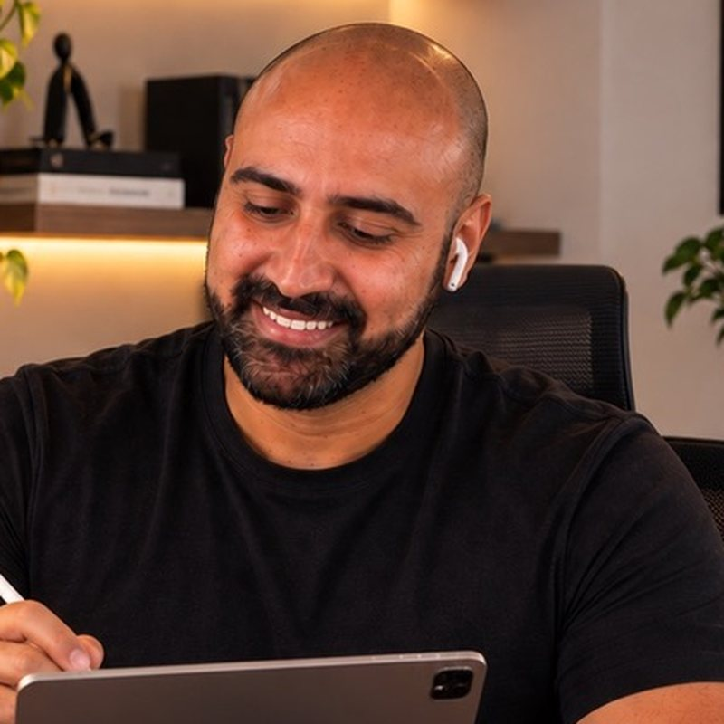

Detecção que funciona em produção, não só no laboratório.
Detection that works in production, not just in the lab.
Sou SIEM Tech Leader no SOC/CSIRT da Suzano S.A., uma das maiores empresas do Brasil. Respondo pela arquitetura e operação do Elastic SIEM, pela ingestão de logs de múltiplas plataformas e pelo ciclo completo de engenharia de detecção — da hipótese ao caso de uso documentado, mapeado em MITRE ATT&CK e com guia de investigação.
I'm the SIEM Tech Leader at Suzano S.A.'s SOC/CSIRT, one of Brazil's largest companies. I own the architecture and operation of Elastic SIEM, multi-platform log ingestion and the full detection engineering lifecycle — from hypothesis to a documented, MITRE ATT&CK-mapped use case with an investigation guide.
No dia a dia atuo em resposta a incidentes (BEC, comprometimento de identidade, abuso de contas de serviço, alterações em GPO), segurança de Active Directory e Entra ID, automação com Python e PowerShell e na construção da base de conhecimento do CSIRT — runbooks, playbooks e padrões de documentação.
Day to day I work on incident response (BEC, identity compromise, service account abuse, GPO tampering), Active Directory and Entra ID security, Python and PowerShell automation, and building the CSIRT knowledge base — runbooks, playbooks and documentation standards.
Fora do SOC, divulgo cibersegurança para o público geral com carrosséis e animações no Instagram, porque segurança também se faz com educação.
Outside the SOC, I teach security to a general audience through carousels and animations on Instagram — because security is also built through education.
O que eu faço
What I do
Arquitetura Elastic SIEM
Elastic SIEM architecture
Fleet, Logstash, data tiers (hot → frozen), ML anomaly detection e saúde da ingestão.
Fleet, Logstash, data tiers (hot → frozen), ML anomaly detection and ingestion health.
Engenharia de Detecção
Detection Engineering
Casos de uso mapeados em MITRE ATT&CK, tuning, supressão de alertas e revisão de qualidade de regras.
MITRE ATT&CK-mapped use cases, tuning, alert suppression and rule quality reviews.
Resposta a Incidentes
Incident Response
Triagem, contenção e briefings executivos — de BEC e caixas comprometidas a incidentes em terceiros.
Triage, containment and executive briefings — from BEC and compromised mailboxes to third-party incidents.
Identidade & AD
Identity & AD
Detecção de DCSync, Kerberoasting, password spray e abuso de contas privilegiadas.
Detection of DCSync, Kerberoasting, password spraying and privileged account abuse.
Integração multiplataforma
Multi-platform integration
Firewalls, NDR, XDR, NAC e ITSM convergindo para uma visão única no SIEM.
Firewalls, NDR, XDR, NAC and ITSM converging into a single SIEM view.
Automação & IA
Automation & AI
Python, PowerShell, Graph API, KPIs de SOC automatizados e IA aplicada à resposta a incidentes.
Python, PowerShell, Graph API, automated SOC KPIs and AI applied to incident response.
Destaques recentes
Recent highlights
Histórico profissional
Professional history
SIEM Tech Leader — SOC/CSIRT
- Arquitetura e operação do Elastic SIEM integrado a firewall, XDR, NDR, NAC, M365/Entra ID e ITSM.
- Ciclo de engenharia de detecção com casos de uso documentados e mapeados em MITRE ATT&CK.
- Resposta a incidentes e coordenação técnica com o provedor de SOC parceiro.
- Criação do padrão de documentação do CSIRT (KB, runbooks e playbooks).
- Dashboards de KPIs do SOC e relatórios executivos.
- Architecture and operation of Elastic SIEM integrated with firewall, XDR, NDR, NAC, M365/Entra ID and ITSM.
- Detection engineering lifecycle with documented, MITRE ATT&CK-mapped use cases.
- Incident response and technical coordination with the partner SOC provider.
- Created the CSIRT documentation standard (KB, runbooks and playbooks).
- SOC KPI dashboards and executive reporting.
Segurança para todo mundo
Security for everyone
Carrosséis diários e animações sobre golpes digitais, phishing, senhas, deepfakes e uso seguro de IA — em linguagem que qualquer pessoa entende.
Daily carousels and animations on digital scams, phishing, passwords, deepfakes and safe AI use — in language anyone can follow.


Onde me encontrar
Find me
Vamos conversar?
Let's talk
Aberto a conversas sobre engenharia de detecção, arquitetura de SIEM, palestras, mentoria e oportunidades. O caminho mais rápido é o LinkedIn.
Open to conversations about detection engineering, SIEM architecture, talks, mentoring and opportunities. LinkedIn is the fastest way to reach me.